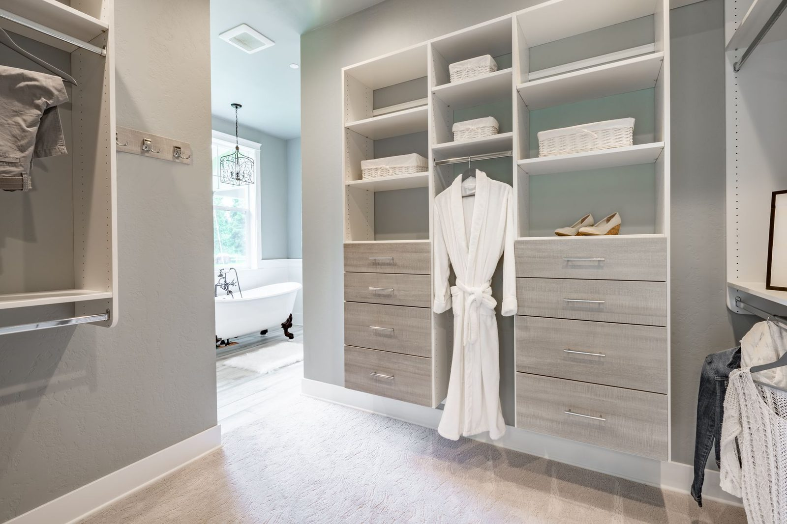
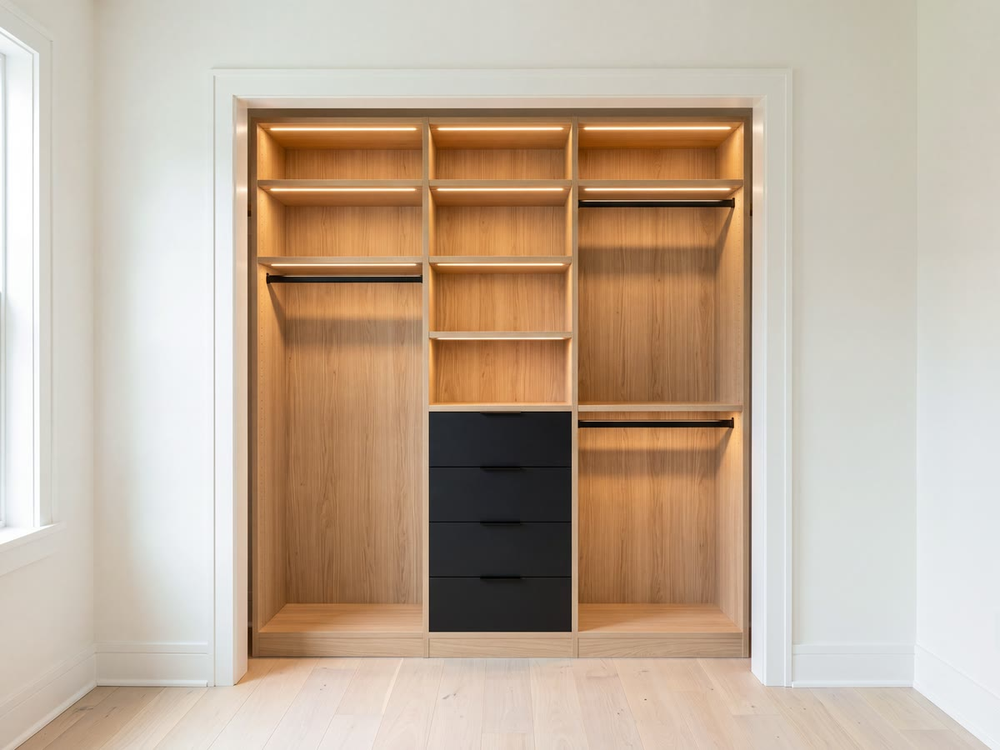
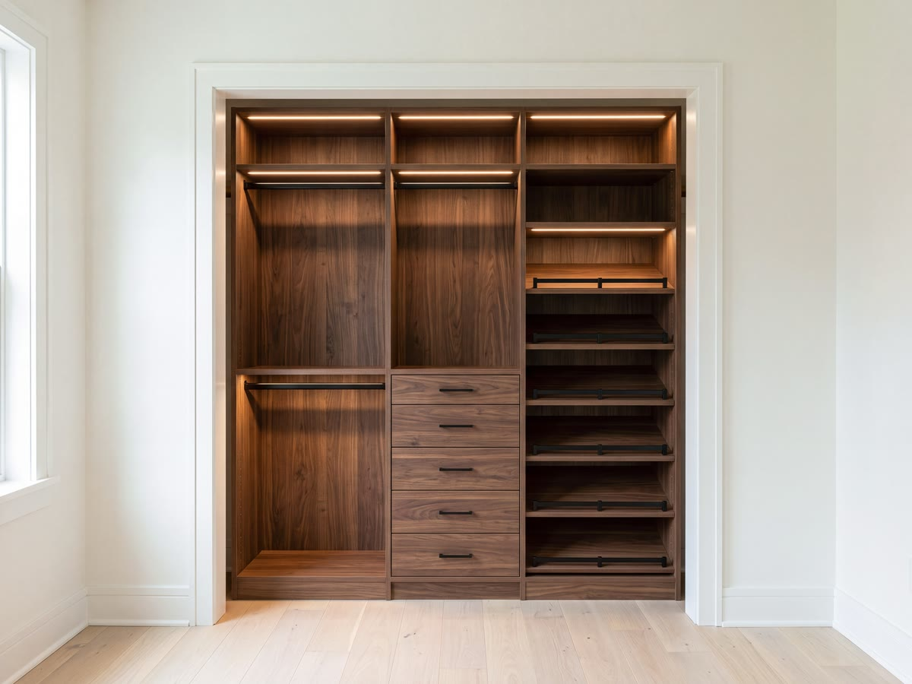

Make your own
Put in your room's real dimensions and set every section yourself. The drawing updates live.

The standard builder's closet is one rod and one shelf, and it wastes more than half the box. A reach-in system is the cheapest square-foot upgrade in the house.
A typical bedroom reach-in is six feet wide, two feet deep and eight feet tall, about 96 cubic feet. A single rod at 66 inches uses maybe 40 of them. The rest is air above the shelf and floor below the hems.
Splitting that same box into a double-hang section, a drawer stack and a shoe column usually lands between 2.0 and 2.4 times the usable storage, without touching a wall. It is the same room; the difference is entirely in how the inside is divided.
Every one gets redrawn to your measurements before anything is cut. These are where the conversation starts, not a menu you have to choose from.
 Fits a 4'–6' opening
See the build
Fits a 4'–6' opening
See the build
Double hang and shelving. The most capacity for the least money.

Fits a 6' opening See the buildAdds a drawer stack in the centre so the bedroom dresser can leave.

Fits a 6'–8' opening See the buildDrawers, shoe shelving and a hamper. Everything the room needs, inside the closet.
Put in your room's real dimensions and set every section yourself. The drawing updates live.
| Layout | Minimum | Why |
|---|---|---|
| 4'0" opening | One double hang + one shelf tower | Single occupant, no drawers |
| 6'0" opening | Double hang + drawers + long hang | The most common bedroom closet |
| 8'0" opening | Two double hangs + drawer bank + shoes | Shared closet, two people |
| Depth | 24" for hanging, 14" for shelf-only | Under 22" deep, hangers hit the door |
If your closet is less than 22 inches deep we turn the hanging sideways or go to shelf-only, because a shirt on a hanger needs 22 inches of clear depth and a coat needs 24.
Every part below is something we actually stock and fit. If a piece is not on this list we will tell you, rather than draw it and work it out later.
Free in-home measure across the East Coast. You get a drawing and a fixed price before anything is ordered.